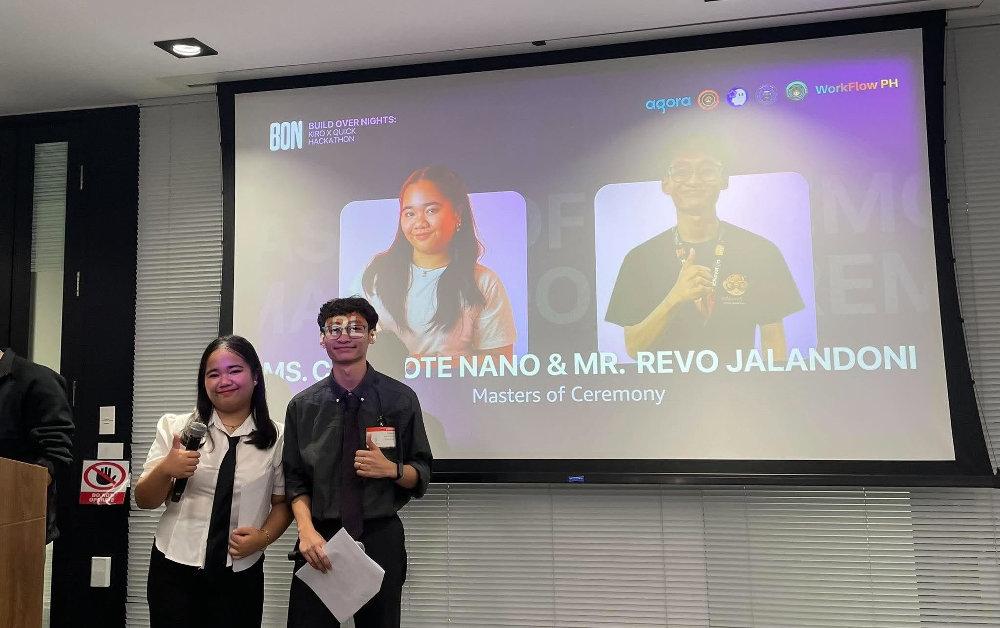
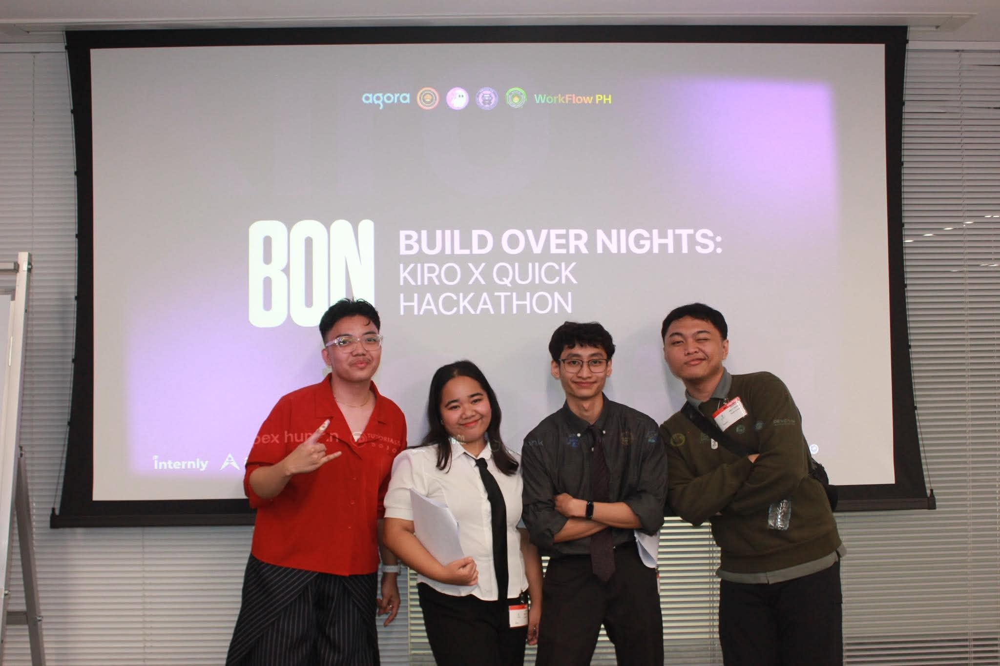
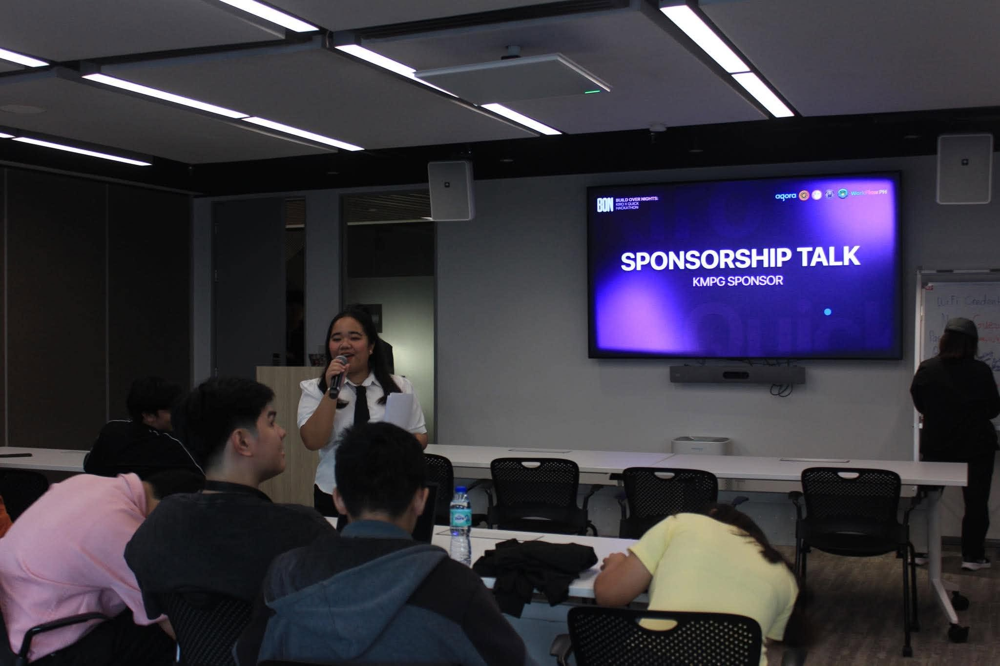
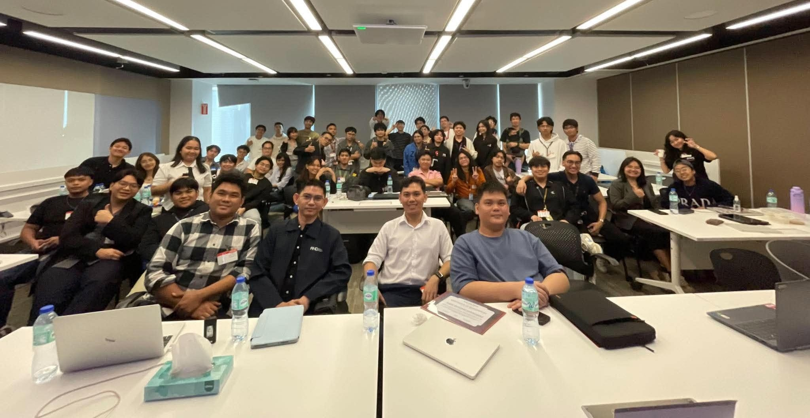
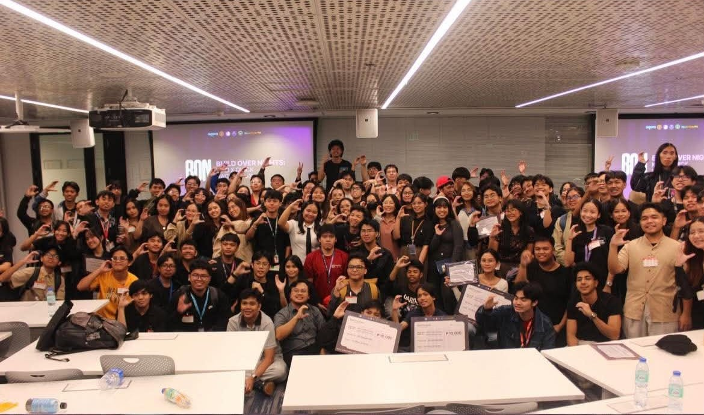

BLOG 1 · COMMUNITY NOTES
Build Over Nights Hackathon 2026





Add the event name, date, and your own photos when you’re ready to share the recap.
What happened
Introduce the event, where it took place, and what brought everyone together. Describe the atmosphere when you arrived and the moments that made the day memorable.
Use this space to walk through the highlights in your own words. Add a detail about a talk, activity, conversation, or surprise that made this gathering feel special.
My part in it
Share what you did as a BuildHers+ Ambassador, what you helped with, and the people you got to work alongside. You can also add what you were hoping to learn or contribute before the event began.
Tell readers about a challenge you helped solve, a new connection you made, or a small behind-the-scenes moment that would otherwise go unseen.
What I’ll remember
Close with a favorite moment, something you learned, and a thought you want to carry into the next event. Add any thank-yous or links you’d like visitors to find.